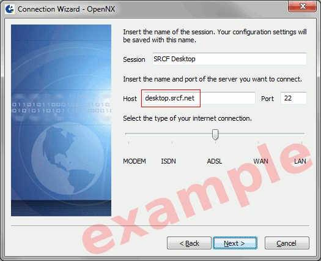
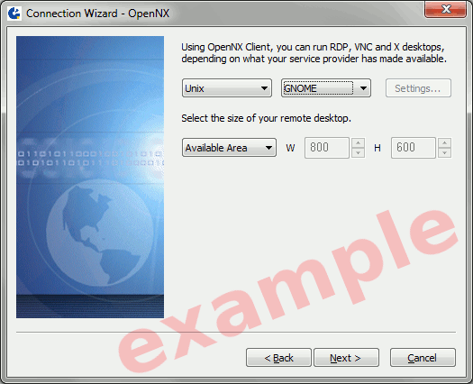

SRCF Desktop Service: standalone client
The SRCF Desktop service will be closing down on 29th July 2017.
These instructions are for use of a standalone NX client with the SRCF desktop service. If in doubt, you should first try the web client as that does not require manual installation.
Connecting to the SRCF Desktop service
- First time? You'll need to download and install a NX client; we recommend OpenNX:
- Run the OpenNX connection wizard, and point it at desktop.srcf.net .

The "type of your internet connection" should be set as relevant: for example, "LAN" if your computer is connected to a college/department network, or "ADSL" for most home broadband connections.
- On the next page, set the desktop environment to GNOME to match the web client's default of GNOME Classic.

- (If you prefer XFCE, choose CDE. For KDE, choose KDE. For Unity, choose Custom, click Settings..., and set to Run the following command: gnome-session --session ubuntu-2d, then choose New virtual desktop. To run a custom .xsession script instead of a standard desktop environment, configure as for Unity but use the command /etc/X11/Xsession.)
- Leave all other settings in the OpenNX client set to their defaults if unsure.
- Log in with your SRCF username and password when prompted.
- You should now be up and running!